5.4. Connectivity
In this section we consider sensor-based EEG connectivity analyses and visualization using the phase slope index, a method first described here. We'll focus on connectivity profiles in NREM versus REM sleep, as well as looking at possible sex differences in these metrics.
Luna supports other approaches to connectivity (cross-channel) analyses
including time-domain correlations
(CORREL, largely
for QC), coherence
(COH), and
cross-correlation
(XCORR). One
advantage of the PSI is that it ignores so-called zero-lag effects,
meaning that the impact of volume conduction is effectively eliminated, as illustrated in
the following section.
Simulated signals
Secondary material
This section -- which is based on a simple simulation of signal data -- is secondary to the primary path of the walkthrough: this can be skipped or returned to later, if desired, in which case you can move to the section below
Before we turn to the real data, it can be useful to use simplied,
simulated signal data - if for nothing else, to check that various
commands are working as one might expect/hope. We'll therefore take this
opportunity to make a brief detour, introducing the
SIMUL command
to generate 30 seconds of signal data, then add some temporally
shifted copies, and then apply various cross-channel analyses to
those toy signals:
luna . --nr=30 --rs=1 \
-o out/simul-conn.db \
-s ' SIMUL sig=S1 sr=200 alpha=2 intercept=10
PSD sig=S1 dB spectrum max=100 slope=10,90
COPY sig=S1 new=FOR
COPY sig=S1 new=BCK
COPY sig=S1 new=EQL
SHIFT sig=FOR sp=20
SHIFT sig=BCK sp=-20
CORREL
XCORR w=2 verbose
COH
PSI
PSI f-lwr=3 f-upr=19 r=2 w=4 '
Stepping through the above code:
-
rather than read a sample list, EDF or other text file, the
.character right after thelunacommand tells Luna to generate an empty EDF, with no channels but assuming 30 (--nr) 1-second (--rs) records, i.e. a single 30-second sample -
the
SIMULcommand generates a signalS1with a sample rate of 200 Hz; there are various ways to specify the properties of the signal (e.g. it could be based on an observed power spectrum read from a file, etc); here we generate a random signal by specifying the 1/f spectral slope (alpha, the negative of the slope exponent) and intercept (intercept) -
to confirm the signal are as expected, we apply the
PSDcommand to generate a power spectrum, also requesting it calculates the spectral slope (via log-log regression over the 10 - 90 Hz range,slope) -
we then
COPYthe signal three times, assigning channel labelsFOR,BCKandEQL -
we
SHIFTtheFORsignal 20 sample-points forward in time (sp=20), or +0.1 seconds -
we
SHIFTtheBCKsignal 20 sample-points backwards in time (sp=-20), or -0.1 seconds -
we leave the
EQLsignal as is (i.e. equal) -
we then apply four different methods to quantify relationships between two signals: time-domain correlation (
CORREL), cross-correlation (i.e. correlation with lag) (XCORR), spectral coherence (COH) and phase slope index (PSI) -
we use the
PSIin both broadband and narrowband applications: for the former we span the full frequency range (up to Nyquist, or 100 Hz), in the latter case, we'll use the same 4 Hz bins as below in the analysis of real data.
After running the above, it will generate a single out/simul-conn.db
file with all the results. We'll load it into R:
library(luna)
k <- ldb( "out/simul-conn.db" )
S1 signal:
d <- k$PSD$CH_F
par(mfcol=c(1,2))
plot( d$F , d$PSD , type="l" , xlab = "Frequency (Hz)" , ylab="log(Power)" )
plot( log(d$F) , d$PSD , type="l" , xlab = "log(Frequency (Hz))" , ylab="log(Power)" )
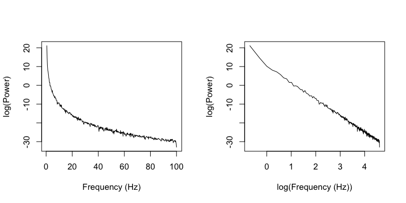
The right log-log plot is approximately linear, consistent with the 1/f power law used to generate the data. We can also confirm that that estimated spectral slope is as specified:
k$PSD$CH
ID CH NE SPEC_INTERCEPT SPEC_RSQ SPEC_SLOPE SPEC_SLOPE_N
. S1 1 2.299411 0.9911905 -1.997791 318
That is, the spectral slope (expected to equal minus alpha) is
SPEC_SLOPE, which is close to -2.0. Also, the intercept is close to
log(10), as expected.
So far, so good: let's turn to the cross-channel metrics. Considering
the raw correlation (CORREL) metrics, between the original signal
(S1) and the three other (shifted) signals:
d <- k$CORREL$CH1_CH2
d[ d$CH1 == "S1" , ]
ID CH1 CH2 R
. S1 BCK 0.9802641
. S1 EQL 1.0000000
. S1 FOR 0.9802642
They are all high. For S1-EQL, the correlation is 1.0 as this
is the same signal. The two time-shifted signals have strong but
slightly reduced correlations with S1, i.e. r = 0.98. Given the
nature of the signal (especially as it follows a 1/f power law,
implying that slower frequency activity tends to be of larger
amplitude), this is not suprising: e.g. a typical EEG signal shifted
only 0.1 seconds in time should still look quite similar from a broad
perspective. However, these statistics are not particularly
illuminating in pointing to the underlying temporal differences
between the four signals.
Next, we'll look at the delays (here, in seconds) estimated based on
the lagged cross-correlations (XCORR):
d <- k$XCORR$CH1_CH2
d[ d$CH1 == "S1" , c("CH1","CH2","D" ) ]
CH1 CH2 D
S1 BCK 0.1
S1 EQL 0.0
S1 FOR -0.1
These are as expected: i.e. the S1 channel is +0.1 ahead of BCK,
0.1 behind FOR (so a negative D), and aligned with EQL. So,
unlike CORREL, the XCORR approach gives information about the
relative temporal relationships between signals. (Luna also implements
other methods including mutual information and Granger prediction that
can achieve similar ends as CORREL and XCORR but are beyond the scope
of this walkthrough.)
Now turning to the two other frequency-domain measures, from the
COH and PSI commands. In this simple example, although we shifted the
entire time-domain signal, spectral analysis allows for varying
effects across different parts of the frequency spectrum, consistent
with real signals potentially being complex composites of underlying
sources, each with their own distinct frequency and cross-channel
properties.
Looking first at magnitude-squared spectral coherence, which has its default output stratified by classical frequency bands:
d <- k$COH$B_CH1_CH2
We'll extract and compile the main outputs (note: here, manually rearranging/annotating outputs below for clarity):
d[ d$CH1 == "S1" & d$CH2 == "FOR" , c("CH1","CH2","B","COH") ]
...etc...
S1-FOR S1-EQL S1-BCK
B COH COH COH
SLOW 0.9770651 1.0000000 0.9762857
DELTA 0.9851450 1.0000000 0.9829453
THETA 0.9906864 1.0000000 0.9912435
ALPHA 0.9904542 1.0000000 0.9902662
SIGMA 0.9901979 1.0000000 0.9908714
BETA 0.9915732 0.9999999 0.9914409
GAMMA 0.9910118 0.9999998 0.9908903
Looking across the table of coherence metrics above, we might note:
-
these outputs are all high, indicating strong coherence between signals (as expected); the values for
EQLare very slightly higher, but these differences will reflect slight numerical effects as well as the fact that the shifted signals wrapped around the 30-second window, which will reduce the overall coherence. -
they are distributed across all frequency bands more or less equally, i.e. broadly as expected, given our simulation did not differentiate between different spectral components when shifting the signals in time.
-
they do not distinguish the temporal ordering, e.g. that
FORcomes beforeS1, etc; again, this is as expected as this metric (COH) is not a directional or directed measure.
Finally, we'll turn to the phase slope index (PSI), which we requested to be calculated across broad and different narrowband frequency intervals. These are tracked in the output:
k$PSI$F
F F1 F2 NF
3.00 1.0 5 9
5.00 3.0 7 9
7.00 5.0 9 9
9.00 7.0 11 9
11.00 9.0 13 9
13.00 11.0 15 9
15.00 13.0 17 9
17.00 15.0 19 9
19.00 17.0 21 9
50.25 0.5 100 200
The F1 and F2 values show the lower and upper frequencies for each
analysis interval. The last (broadband) one spans (almost) the entire
range (0.5 to 100 Hz) and was generated by the first PSI command
without any arguments. The other intervals reflect narrowband
connectivity, defined in 4 Hz bins. In this simulated example, we'd
expect qualitatively similar results for all analyses, as we shifted
the raw time-domain signal leading to both faster and slower
components having the same temporal offset.
We can now look at the PSI values: first for the broadband case:
d <- k$PSI$CH1_CH2_F
d[ d$CH1 == "S1" & d$F == 50.25 , c( "CH1","CH2","F","PSI" ) ]
CH1 CH2 F PSI
S1 BCK 50.25 -1132.879930
S1 EQL 50.25 -0.717585
S1 FOR 50.25 1361.825001
The PSI statistics are standardized such that (approximately) absolute values greater than 2.0 are indicative of non-random connectivity (information flow) between the two channels. These metrics are also directed in that a positive PSI between A and B implies that A leads (is the source) and B lags (is the sink). Also note that PSI(A,B) = - PSI(B,A).
We see a distinct pattern in the table above, in which PSI values indicate the correct temporal relationships between signals:
-
BCKleadsS1as PSI(S1,BCK) is strongly negative -
S1leadsFORas PSI(S1,FOR) is strongly positive -
S1andEQLdo not exhibit nonzero-lag information flow, as the PSI is relatively small
This underscores a key aspect of the PSI: it is designed to capture
only nonzero-lag connectivity. By this definition, S1 and
EQL are indeed not "connected" as there is no temporal element to their
relationship. This is often a useful constraint, as it effectively
excludes "non-causal" factors that might make two signals similar,
including volume conduction effects in the EEG. As such, this makes
the PSI an attractive metric for EEG-based connectivity analyses.
We'll close this sub-section with two further small points. First, as expected, we see qualitatively similar results when looking across narrowband analyses (the absolute PSI metrics are smaller because of the reduced frequency window size):
d[ d$CH1 == "S1" & d$F != 50.25 , c( "CH1","CH2","F","PSI" ) ]
S1-BCK S1-EQL S1-FOR
F PSI PSI PSI
3 -73.885145492 -0.199960618 65.467585548
5 -39.706388134 0.640658114 40.401234017
7 -60.966456772 0.114222518 52.318202080
9 -54.125419064 -0.003327261 61.550267368
11 -50.844636027 -0.844346402 53.422654189
13 -34.312824828 -1.479385200 34.993573203
15 -82.616100979 0.167578880 129.088434629
17 -33.702676241 -0.634573681 36.626256569
19 -55.715156701 0.157032813 70.894592750
The variation between the different rows/windows is largely stochastic: presumably in longer time series, these values would tend to asymptote. In the walkthrough below, we'll be apply this narrowband approach, as -- in real sleep EEG data -- we're interested in teasing apart different patterns of connectivity across different parts of the frequency spectrum.
Second, the COH command also estimates imaginary coherence
(ICOH) which is similar to PSI in that a) it is directed, and b) it
excludes zero-lag sources. In fact, PSI is built on top of imaginary
coherence, so to speak. Although beyond the scope of this
walkthrough, the interpretation of these metrics can be more
challenging, however. In this example, if we extract (band-specific)
ICOH values from k$COH$B_CH1_CH2 we'd see
(again, manually rearranging the output here for clarity) something like:
S1-BCK S1-EQL S1-FOR
B ICOH ICOH ICOH
SLOW -0.21 0.00 0.22
DELTA -0.84 0.00 0.84
THETA 0.39 0.00 -0.39
ALPHA 0.06 0.00 -0.06
SIGMA -0.73 0.00 0.73
BETA 0.21 0.00 -0.21
GAMMA 0.00 0.00 0.00
Unlike the PSI (which covered a similar frequency as the
first six bands), we see qualitatively different directions of ICOH across bands,
e.g. for delta and sigma versus alpha and beta, that arise as a consequence
of a fixed shift in time operating one the whole signal. The relative effects for FOR versus BCK signals are consistent
(i.e. always opposite) and the EQL channel also shows ICOH values
of 0.0, similar to PSI. However, due to how it is differently
conceptualized, in this instance the PSI does a better job of
resolving the underlying, simulated effect more clearly.
We'll now leave the simulation data behind and return to the analysis of the walkthrough data.
Phase-slope index (PSI)
We'll apply the PSI
command to N2 and REM
sleep separately. Because PSI uses a bootstrap method to create
standardized statistics, we'll select the same, fixed number of epochs
per individual (50 epochs, or 25 minutes) of each stage. (Note: this
randomization means that different runs will produce slightly
different results, although we expect the fundamental patterns to
hold.)
We'll instruct PSI to look at all pairwise combinations of channels;
for each analysis, it will consider how connectivity changes as a
function of frequency, and so the methods requires an interval
spanning multiple frequency bins. We'll specify a 4 Hz window (w),
initially centered on 3 Hz (f-lwr, i.e. 1 - 5 hz) which is then
shifted in increments of 2 Hz (r) up to 19 Hz (f-upr, i.e. 17 - 21
Hz).
First, for N2 sleep:
luna c.lst -o out/coh-nrem.db order-signals=T \
-s ' MASK ifnot=N2 & RE
CHEP-MASK ep-th=3,3
CHEP epochs & RE
MASK random=50 & RE
PSI sig=${eeg} f-lwr=3 f-upr=19 r=2 w=4 double-entry=F '
Second, for REM (note: as done in previous exercises, we could have combined these in a single run using the freeze/thaw mechanism):
luna c.lst -o out/coh-rem.db order-signals=T \
-s ' MASK ifnot=R & RE
CHEP-MASK ep-th=3,3
CHEP epochs & RE
MASK random=50 & RE
PSI sig=${eeg} f-lwr=3 f-upr=19 r=2 w=4 double-entry=F '
Note that we've added order-signals=T to ensure that all outputs are
in the same order with respect to channel, i.e. so they can be more
easily merged, given we know that all individuals have the same set of
channels (but potentially different orderings, e.g. due to different
processing or recording steps).
Looking at the outputs, we'll first check that each individual
had exactly 50 epochs included, by looking at the
RE command's output (noting that the second invocation
will have overwritten any outputs from the first RE
as we didn't set any TAG). This gives the number
of epochs retained just prior to the execution of PSI:
destrat out/coh-nrem.db +RE
ID DUR1 DUR2 NA NR1 NR2 NS
F01 8850 1500 1 8850 1500 57
F02 9480 1500 1 9480 1500 57
F03 8910 1500 1 8910 1500 57
F04 5730 1500 1 5730 1500 57
F05 7500 1500 1 7500 1500 57
F06 9810 1500 1 9810 1500 57
F07 10110 1500 1 10110 1500 57
F08 7500 1500 1 7500 1500 57
F09 11040 1500 1 11040 1500 57
F10 8940 1500 1 8940 1500 57
M01 12390 1500 1 12390 1500 57
M02 12930 1500 1 12930 1500 57
M03 10110 1500 1 10110 1500 57
M04 8670 1500 1 8670 1500 57
M05 14370 1500 1 14370 1500 57
M06 9360 1500 1 9360 1500 57
M07 8700 1500 1 8700 1500 57
M08 7920 1500 1 7920 1500 57
M09 12720 1500 1 12720 1500 57
M10 7770 1500 1 7770 1500 57
As well as the number of signals (NS) and annotation channels (NA,
1 because after restructuring, Luna internally represents the data as
EDF+D which have annotation channel time-track), we see the number of
seconds before (DUR1) and after (DUR2) the restructuring. After
restructuring all individuals have exactly 1500 seconds retained, i.e. 25
minutes, or 50 30-second epochs.
For REM sleep (here pulling just DUR2), two individuals (M01 and
M08) have less than 50 epochs retained:
destrat out/coh-rem.db +RE -v DUR2
ID DUR2
F01 1500
F02 1500
F03 1500
F04 1500
F05 1500
F06 1500
F07 1500
F08 1500
F09 1500
F10 1500
M01 840
M02 1500
M03 1500
M04 1500
M05 1500
M06 1500
M07 1500
M08 1470
M09 1500
M10 1500
We'll ignore this in this walkthrough and keep everything as is: it likely won't have any marked impact, although one may want to be more careful with real analyses, of course.
The PSI command outputs three types of table:
destrat out/coh-nrem.db
[PSI] : F : 9 level(s) : F1 F2 NF
: : :
[PSI] : F CH : 513 level(s) : APSI APSI_RAW ASTD PSI PSI_RAW
: : : STD
: : :
[PSI] : F CH1 CH2 : 14364 level(s): PSI PSI_RAW STD
The first table only gives information about the analysis window (which will be the same for all individuals):
destrat out/coh-nrem.db +PSI -r F
ID F F1 F2 NF
F01 3 1 5 9
F01 5 3 7 9
F01 7 5 9 9
F01 9 7 11 9
F01 11 9 13 9
F01 13 11 15 9
F01 15 13 17 9
F01 17 15 19 9
F01 19 17 21 9
This shows the nine windows (F1 to F2 in each row) analysed (in Hz); NF
is the number of frequency bins within each window (i.e. the number of
points over which the slope is calculated, which also happens to be nine).
The second F-by-CH table gives summaries for each channel per
frequency interval (i.e. 9 * 57 = 513): these are referred to as net PSI channel-level
summaries.
The final F-by-CH1-by-CH2 table gives the underlying pairwise
PSI statistics (i.e. 9 * 57 * 56 / 2 = 14,364).
We consider these two outputs below, using PSI as the primary
variable of interest.
net PSI
Extracting the single channel (net PSI) metrics from N2 and REM analyses:
destrat out/coh-nrem.db +PSI -r CH F > res/psi1.n2
destrat out/coh-rem.db +PSI -r CH F > res/psi1.rem
We'll load the tables into R:
nr <- read.table( "res/psi1.n2" , header=T, stringsAsFactors=F)
r <- read.table( "res/psi1.rem" , header=T, stringsAsFactors=F)
The PSI is the primary metric of interest, so we'll extract only that from N2:
d <- nr[ , c("ID","CH","F","PSI") ]
NR:
names(d)[4] <- "NR"
We know that N2 and REM outputs align, so we can lazily combine them
by adding a variable R which is the PSI from the REM (r) data
frame (note: for real projects, it would be safer to formally
merge() these data frames, in case there was a different number
or ordering of rows):
d$R <- r$PSI
We now have a data frame with net PSI values for each
channel/individual, separately for N2 (NR) and REM (R):
head(d)
ID CH F NR R
F01 AF3 3 3.355627 -6.709963
F01 AF4 3 3.145805 -4.844380
F01 AFZ 3 4.110808 -5.670855
F01 C1 3 1.654990 1.402476
F01 C2 3 2.190198 4.168378
F01 C3 3 2.651041 1.046145
As the pairwise PSI metrics are standardized, values of +/- 2 can roughly be interpreted as evidence of a relationship between the two signals. We can summarize these metrics, by channel and frequency:
s.nr <- data.frame( tapply( d$NR , list( d$CH , d$F ) , mean ) )
s.r <- data.frame( tapply( d$R , list( d$CH , d$F ) , mean ) )
We can then generate topo-plots (with ltopo.rb() or similar function - and with
apologies for the lazy/hacky way to add labels...):
zlim <- range( s.nr , s.r )
par(mfcol=c(3,9),mar=c(0,0,0,0))
for (f in 1:9) {
plot(0,0,xlim=c(-1,1),ylim=c(-1,1),axes=F,type="n")
text( 0,0,paste(1+(f-1)*2,"-",5+(f-1)*2,"Hz") )
ltopo.rb( rownames( s.nr ) , s.nr[,f] , zlim = zlim , sz=1.25)
ltopo.rb( rownames( s.r ) , s.r[,f] , zlim = zlim , sz=1.25 )
}
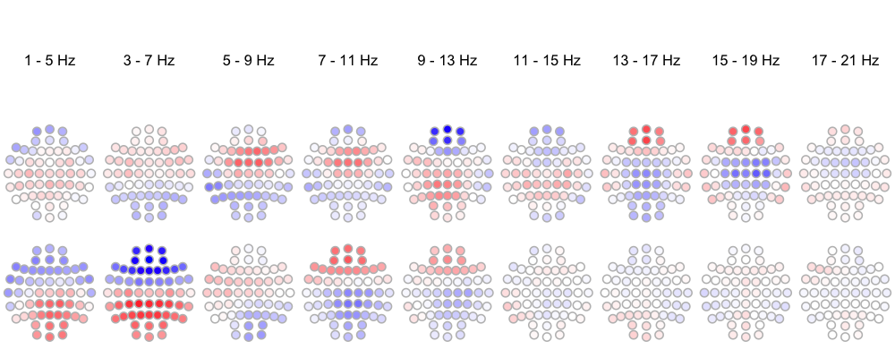
In the above, the top row is for N2 sleep, the bottom row is for REM. The nine columns represent the nine frequency intervals (i.e. centered at 3, 5, 7, 9, 11, 13, 15, 17 and 19 Hz respectively). All plots have been scaled to use the same z-axes (color scale).
We can also generate the same plot, but only flagging PSI values with a sample-average absolute PSI of 2 or
more: i.e. setting low values to NA and then re-running the above plotting code:
s.nr[ abs( s.nr ) < 2 ] <- NA
s.r[ abs( s.r ) < 2 ] <- NA
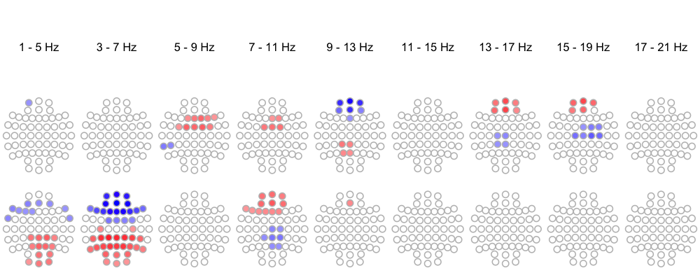
A positive PSI(CH1,CH2) is consistent with information flow from
CH1 to CH2, i.e. CH1 leads (is the source) and CH2 lags (is
the sink). A net PSI for CH is the sum of all pairwise PSI values
where CH is the first of the pair: PSI(CH,*). It therefore
follows that a positive net PSI (red in above plots) implies that
channel on average tends to lead (is a source); conversely, blue
implies the channel tends to lag (is a sink).
From these plots we can conclude:
-
the strongest N2 net connectivity is generally spanning the middle frequencies around sigma
-
there are qualitative differences in the average patterns between lower (5-9 Hz), middle (9-13 Hz) and higher (13-17 Hz) N2 patterns however
-
REM sleep has strongest net PSI values for the theta range (3-7 Hz) but less in the the higher frequencies
-
comparing N2 and REM sleep, the patterns of net connectivity appear to be qualitatively different too
Physical, causal interpretations of (sensor-space) EEG connectivity
Naturally there are profound limitations on the extent to which one can meaningfully infer causal, physical relationships from the EEG in general, and particularly when applied to sensor-level information. In this context we present these metrics as biomarkers that might capture stable individual differences and other patterns of variation in aggregated properties of neural activity, but without direct physical interpretation. As such, terms such as "flow of information" are loose descriptors of unknown, more complex activity patterns. These metrics may nonetheless have value, e.g. for classification or prediction within and between individuals, even in the absence a complete understanding of their biophysical substrates (which is likely true for most measures of human behavior and cognition...).
Individual-level data
As well as group averages, it can be helpful to look at person-to-person variability. Below are net PSI plots for all 20 individuals. These plots are transposed relative to the plots above, namely:
-
rows (n=9): frequency bins from 1-5 to 17-21 Hz
-
columns (n=20+1): each individual (
F01throughM10) followed by the group average in the last column
First, for N2 sleep:
zlim <- range( d$NR )
par(mfcol=c(9,21),mar=c(0,0,0,0))
for (id in unique( d$ID ) )
for (f in unique( d$F) )
ltopo.rb( d$CH , d$NR , f = d$F == f & d$ID == id , zlim = zlim , sz=1)
for (f in 1:9)
ltopo.rb( rownames( s.nr ) , s.nr[,f] , zlim = range( s.nr ) , sz=1)
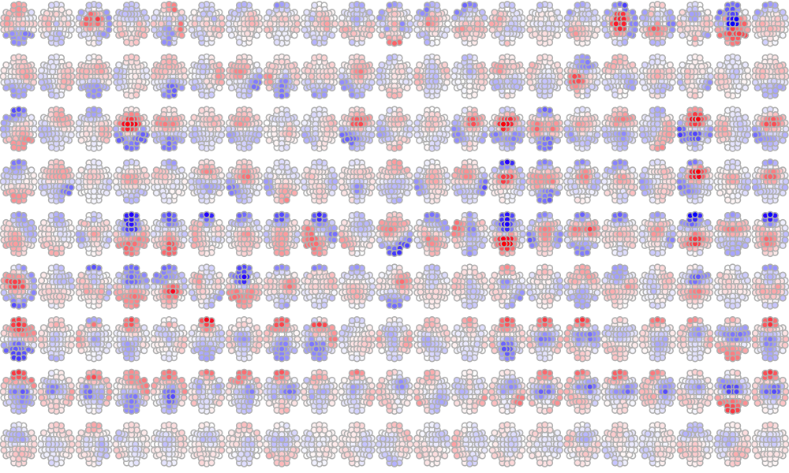
Second, for REM sleep:
zlim <- range( d$R )
par(mfcol=c(9,21),mar=c(0,0,0,0))
for (id in unique( d$ID ) )
for (f in unique( d$F) )
ltopo.rb( d$CH , d$R , f = d$F == f & d$ID == id , zlim = zlim , sz=1)
for (f in 1:9)
ltopo.rb( rownames( s.r ) , s.r[,f] , zlim = range( s.r ) , sz=1)
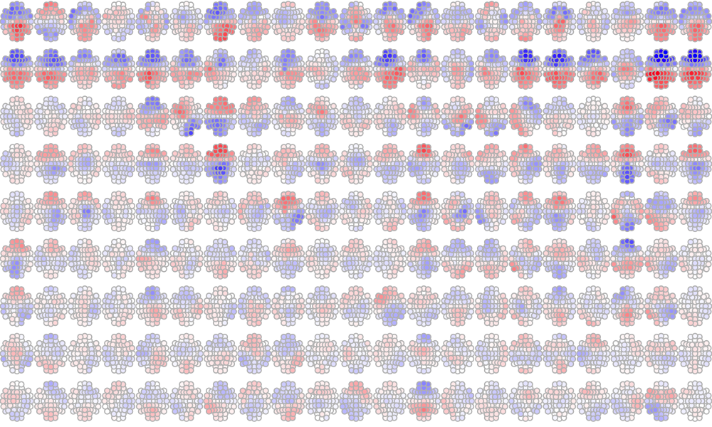
Taking a moment to review these plots, we clearly observe person-to-person variation, as expected. Nonetheless, the most prominent group-level features noted above are broadly preserved across most individuals, i.e. rather than driven by a single individual with outlier values. Perhaps clearest is the profile of REM theta connectivity (second row of the above): almost all individuals show the same posterior-to-anterior flow. In contrast, this pattern is absent during N2 sleep.
Pairwise metrics
Next, we'll turn to the pairwise PSI metrics, extracting these with destrat
(i.e., exit R if needed or run in a separate command-line window):
destrat out/coh-nrem.db +PSI -r CH1 CH2 F > res/psi2.n2
destrat out/coh-rem.db +PSI -r CH1 CH2 F > res/psi2.rem
Back in R, we'll adopt the approach to load & merge these data as
above (noting we now have both CH1 and CH2 indices rather
than only CH):
nr <- read.table( "res/psi2.n2" , header=T, stringsAsFactors=F)
r <- read.table( "res/psi2.rem" , header=T, stringsAsFactors=F)
d <- nr[ , c("ID","CH1","CH2","F","PSI") ]
names(d)[5] <- "NR"
d$R <- r$PSI
As a quick check: the data frame d has 287,280 rows, which reflects
57*56/2 unique channel pairs, times 9 frequency bins, times 20 people.
To reduce output size, Luna outputs each pair only once, i.e. PSI(A,B) but
not PSI(B,A) -- which is by definition the negative of
PSI(A,B). However, as long as
the dataset isn't prohibitively large, it can be convenient to have
a full (symmetric) data structure, so we'll double-enter. Illustrating
this process with dummy data here:
ID F CH1 CH2 PSI
P1 10 FZ CZ -2
P1 10 FZ PZ -1
P1 10 CZ PZ 3
ID F CH1 CH2 PSI
P1 10 FZ CZ -2
P1 10 FZ PZ -1
P1 10 CZ PZ 3
P1 10 CZ FZ 2
P1 10 PZ FZ 1
P1 10 PZ CZ -3
In particular, the plotting function below requires this type of symmetric dataset, which we can create as follows:
d <- rbind( d ,
data.frame(ID=d$ID, F=d$F, CH1=d$CH2, CH2=d$CH1, NR=-d$NR, R=-d$R) )
Visualization
Visualizing directed, pairwise metrics is more challenging than single-channel values. One approach we'll consider here is a simple arrow-plot extension of the topo-plot, with R code available here:
source("http://zzz.bwh.harvard.edu/dist/luna/arconn.R" )
Running the above source() command will provides
the arconn() function which we'll use below. It had the following
primary arguments and default values:
| Parameter | Default | Description |
|---|---|---|
chs1 |
None | Vector of labels for the first channel (assuming double-entered data) |
chs2 |
None | Vector of labels for the second channel |
z |
None | Primary values to plot |
flt |
NULL |
Filter (logical vector, to include/exclude rows) |
Secondary arguments include:
| Parameter | Default | Description |
|---|---|---|
zr |
NULL |
Fix the z-range for primary values (line thinkness, color) |
z2 |
NULL |
Optional secondary z-value (set line color independent of thickness) |
z2r |
NULL |
Fix the z-range for secondary values |
dst |
0.35 | Only include arrows below this spatial distance |
lwd1 |
0.5 | Base width for arrows |
lwd2 |
2 | Scaling factor for arrows (as a function of z values) |
cex |
2 | Size of electrode points |
title |
"" |
Optional title |
head |
T |
Draw circle (head) if true |
The function is design to visually represent directed (i.e. signed)
quantitative values (z) between pairs of channels (ch1 and ch2),
with the following options:
-
by default, both the color-scale and thickness of the arrow indicate the magnitude of
z -
it only plots positive
zvalues (and assumes the data are double-entered), i.e. an arrows either from A to B or from B to A is drawn, based on which has the positivezvalue; the direction of arrows indicates the assumed direction of information flow -
if a secondary
z2is specified, whilzis still reflected in the arrow width, its color is now dictated byz2; this can be useful to represent e.g. group-differences in directed, pairwise measures, whilst still showing the "baseline"/averagee connectivity (we'll see examples below) -
the function plots arrows ordered by their absolute
zvalue, so stronger connections are layered on top -
only a subset of links can be plotted if desired, e.g. restricting only to certain ranges of
z,z2or other conditions -
one can also specify that only proximal (i.e. short/local) connections are plotted (with
dst), which can sometimes make plots clearer
To generate a table of the group-level averages to plot with `arconn(), we'll first get the group-level mean PSI values from the double-entered dataset:
a <- aggregate( d[,c("NR","R")] ,
by = list( F=d$F, CH1=d$CH1, CH2=d$CH2 ) ,
FUN = mean , na.rm=T)
This gives a data frame with 28,728 rows, i.e. the mean over the 20 individuals for each condition:
head(a)
F CH1 CH2 NR R
3 AF4 AF3 0.6304593 0.6514244
5 AF4 AF3 0.7648883 0.4417270
7 AF4 AF3 0.6257399 -0.8808408
9 AF4 AF3 0.5980115 -0.2294660
11 AF4 AF3 0.4958374 0.5268727
13 AF4 AF3 -0.1163091 0.5722406
We'll first plot the average REM PSI pairwise connectivity (d$R) for
the high-delta/theta window (i.e. center frequency F of 5 Hz):
arconn( a$CH1 , a$CH2 , a$R , flt = a$F == 5 )
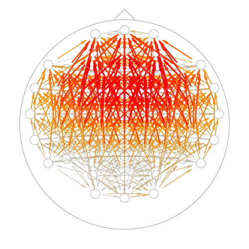
To illustrate the impact of plot options, here we'll show the same values,
but setting dst lower, to only include local connections (note: the default value above
is 0.35, which still excludes very long-range connections):
arconn( a$CH1 , a$CH2 , a$R , flt = a$F == 5 , dst = 0.15 )
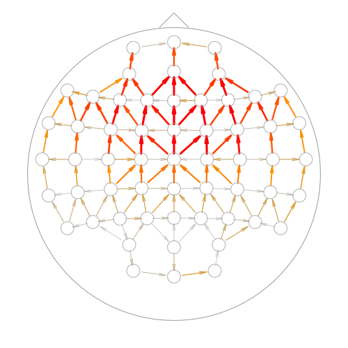
The optimal value of dst will be dependent on the particular montage you have and
other features of the data. The above plot shows very clear consistency of effects,
with almost perfect left-right symmetry in the direction and magnitude of PSI values.
To instead plot only the strongest links, but allow for longer-range connections:
arconn( a$CH1 , a$CH2 , a$R , flt = a$F == 5 & a$R > 3 , dst = 10 )
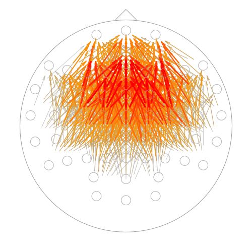
The full color scale goes (negative to position)
navy-blue-gray-orange-red. In all the plots above, we only see
orange/red shades, as all links are positive: i.e. rather than plot a
negative arrow in one direction, arconn() will plot the equivalent
positive PSI value, with the direction of the arrow going from source
to sink. That is, if PSI(A,B) is positive, the arrow will point
from A to B. This is also why we only need to filter (flt) on large
positive values (a$R > 3) in the above command.
Next, we'll compare the REM and N2 plots for the same theta condition,
showing only strong (average Z > 3) local (dst=0.15) connections:
par(mfcol=c(1,2),mar=c(0,0,1,0))
arconn(a$CH1, a$CH2, a$NR, flt= a$F==5 & a$NR>3, dst=0.15, title="N2, 3-7 Hz")
arconn(a$CH1, a$CH2, a$R, flt= a$F==5 & a$R>3, dst=0.15, title="REM, 3-7 Hz")
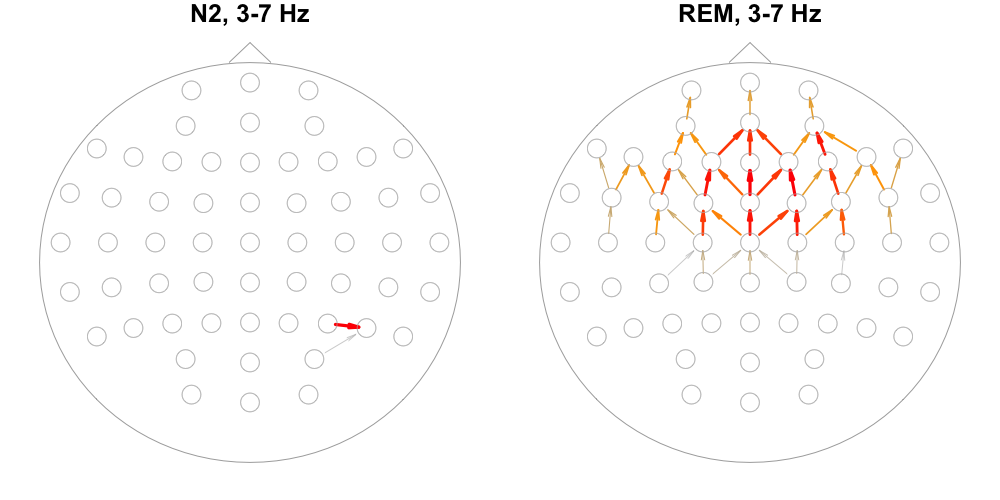
That is, this pattern of theta connectivity appears to be specific to REM at this threshold.
We'll next look at other frequency intervals: e.g. here 13 - 17 Hz PSI, which in the plots
above appeared to have N2-specific effects. Here we'll reduce the threshold and draw longer-range
connections by setting dst=1:
arconn(a$CH1, a$CH2, a$NR, flt= a$F==15 & a$NR>2, dst=1, cex=1, title="N2,13-17 Hz")
arconn(a$CH1, a$CH2, a$R, flt= a$F==15 & a$R>2, dst=1, cex=1, title="REM, 13-17 Hz")
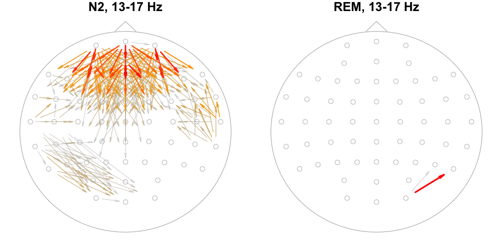
Group means
Now that we're oriented with the use of arconn(), we'll generate all
group-level plots here, using the last configuration (only showing
links where the average (positive) PSI is greater than two, but
otherwise not imposing spatial constraints):
par(mfrow=c(9,2),mar=c(0,0,1,0))
for (f in seq(3,19,2)) {
arconn(a$CH1, a$CH2, a$NR, flt = a$F==f & a$NR>2, dst=1,lwd1=0.1,lwd2=1,
cex=1,title=paste("N2,",f-2,"-",f+2,"Hz",sep=""))
arconn(a$CH1, a$CH2, a$R, flt = a$F==f & a $R>2, dst=1,lwd1=0.1,lwd2=1,
cex=1,title=paste("REM,",f-2,"-",f+2,"Hz",sep=""))
}
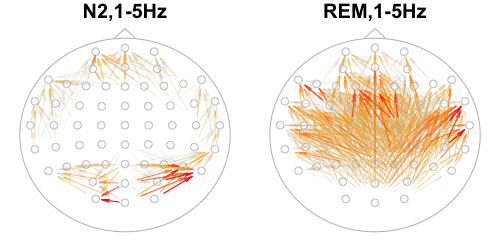
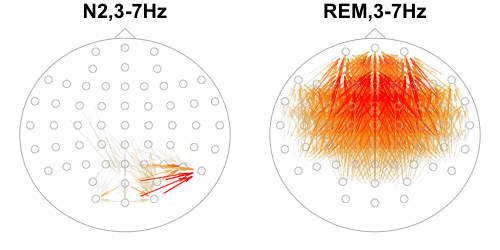
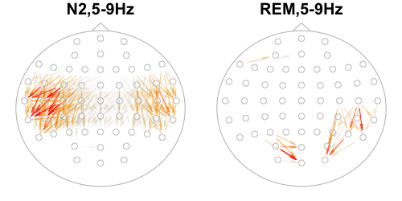
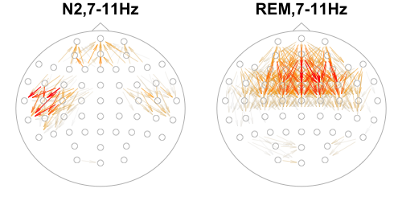
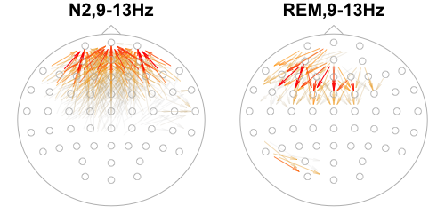
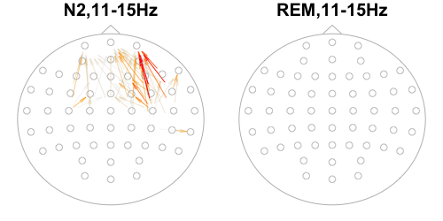
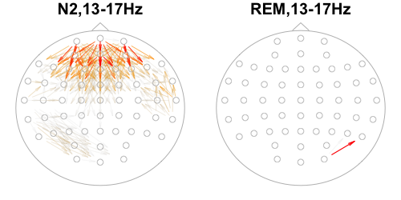
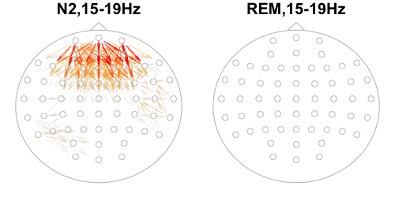
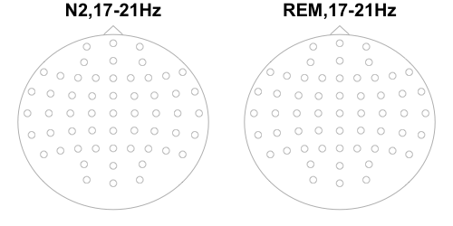
Consistent with the net PSI plots (obviously), we see a range of qualitatively distinct
patterns of connectivity within and between sleep stages and frequency bands. Of course,
one question is whether such differences are meaningful, or purely noise. We'll begin
to address this question below, when we start testing for statistical differences, either
between stages or between groups. But first we'll
take a look at individual-level plots using arconn().
Directional plots
We can set the directional argument to true (T or TRUE) to
change the color scheme, for contexts where the anterior-posterior
axis of connectivity is of paramount significance.
Here, anterior-to-posterior flows (down arrows) are colored blue, whereas posterior-to-anterior flows (up arrows) are colored red. Lateral flows (sideways arrows) are colored gray. Here we also reduce the threshold, showing PSI values above 1 (versus above, where the threshold was 2).
For example:
arconn(a$CH1, a$CH2, a$NR, flt = a$F==3 & a$NR>1,directional=T,
dst=1,lwd1=0.1,lwd2=1,cex=1,title=paste("N2,", f-2,"-",f+2,"Hz",sep="") )
arconn(a$CH1, a$CH2, a$R, flt = a$F==3 & a $R>1,directional=T,
dst=1,lwd1=0.1,lwd2=1,cex=1,title=paste("REM,",f-2,"-",f+2,"Hz",sep="") )
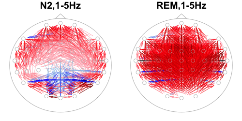
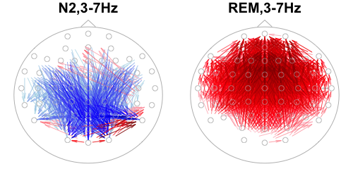
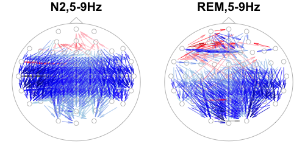
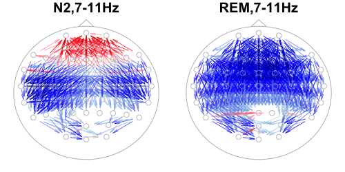
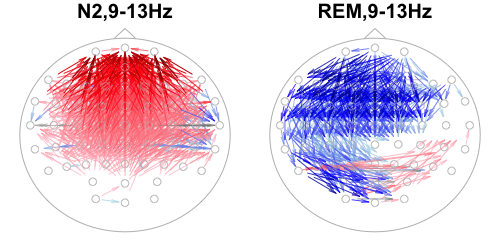
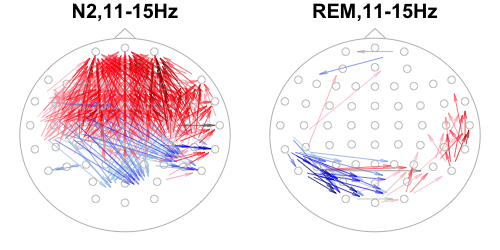
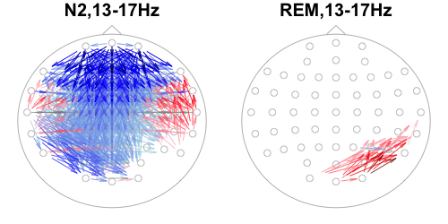
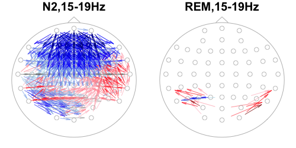
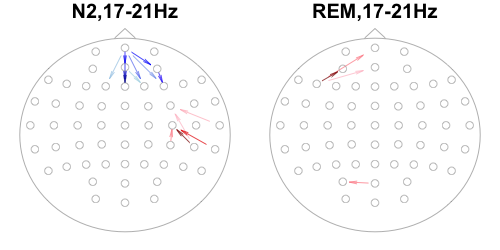
Individual-level plots
As for net PSI, we can generate per-individual plots of pairwise connectivity, here for the REM theta metrics highlighted above:
par(mfrow=c(5,4),mar=c(0,0,1,0))
for (id in unique( d$ID ) )
arconn(d$CH1, d$CH2, d$R, flt = d$ID==id & d$F==5 & d$R>3,
dst=0.2, cex=1, title = id , lwd1=0.2, lwd2=3)
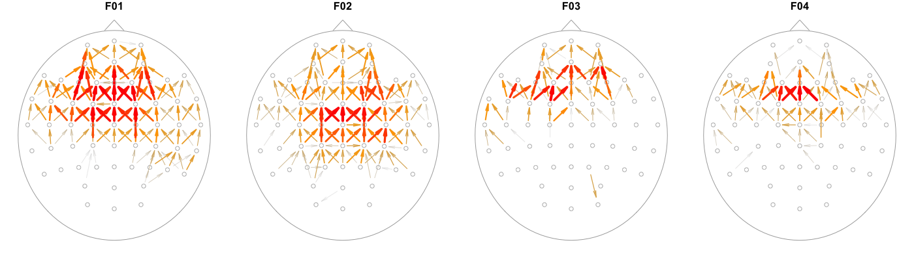
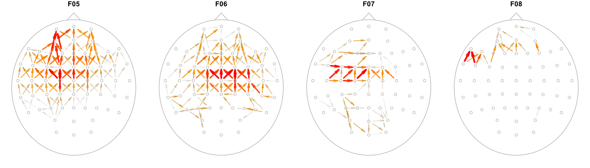
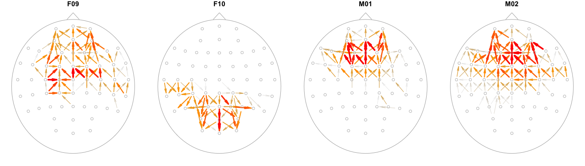
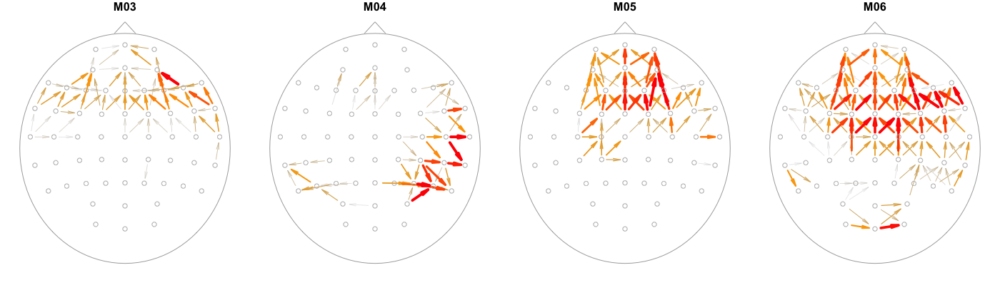
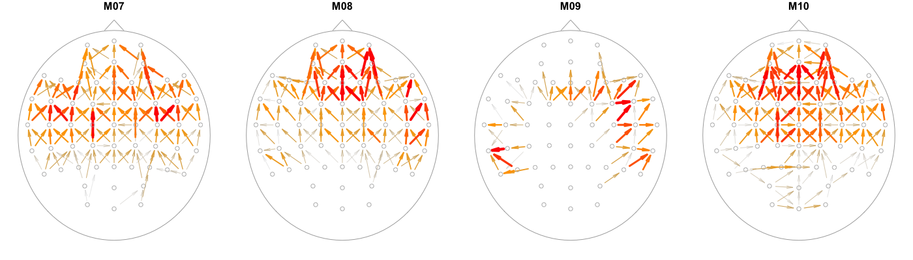
Naturally we can't draw strong conclusions from these limited data,
either with respect to groups or individuals (e.g. small sample and
only 50 epochs selected per individual; further, the use of
thresholding to include/exclude links based on an arbitrary (Z>3)
value can sometimes produce visually misleading results). Nonetheless,
the above plots clearly show the majority of individuals having
consistent effects. On the other hand, a few individuals (e.g. F10,
M04) seem to have relatively distinct profiles. As noted above, even
in this small dataset, we'll begin to employ statistical approaches to formalize
some of these observations, below.
(Note, we also altered the lwd1 and lwd2 parameters in the plots
above: depending on the size and values of the plots, tweaking these
can help to pull out the most pertinent features. You'll probably need
to open the image above in a new browser tab and zoom in to appreciate
the finer details. The original plots are generated at high
(publication-quality) resolutions, although the posted images on this
website were resampled to a lower resolution.)
N2-REM differences
Beyond visualizing group-level and individual plots, we can perform
statistical tests on PSI values. Here we consider formally evaluating
N2 vs REM differences, using a within-individual approach.
We'll see better ways of using Luna to generate association statistics
(and certainly, there will be more efficient ways to do this within R, so
apologies to power R users), but for now we'll use a simple for-loop
approach to build up a table of results (res) based on t.test()
values:
res <- numeric(0)
for (f in unique(d$F)) {
xx <- d[ d$F == f , ]
for (ch1 in unique(d$CH1))
for (ch2 in unique(d$CH2)) {
if ( ch1 != ch2 ) {
yy <- xx[ xx$CH1 == ch1 & xx$CH2 == ch2 , ]
tt <- t.test( yy$NR , yy$R , paired=T )
if ( tt$p.value < 0.001 )
cat( f , ch1 , ch2 , tt$estimate , tt$p.value , "\n" )
res <- rbind( res ,
c(f, ch1, ch2, tt$estimate, tt$p.value,
sign(tt$estimate) * -log10(tt$p.value)))
}}
}
After running the above, we'll tidy up the results table:
res <- data.frame( res )
names(res) <- c("F","CH1","CH2","D","P","Z")
for (i in c(1,4:6)) res[,i] <- as.numeric( res[,i] )
head(res)
F CH1 CH2 D P Z
3 AF3 AF4 0.02096505 0.96342812 0.01618068
3 AF3 AFZ -0.37645859 0.29009675 -0.53745714
3 AF3 C1 1.54748879 0.03601555 1.44350993
3 AF3 C2 1.64084302 0.02545187 1.59428023
3 AF3 C3 0.79983639 0.25474601 0.59389260
3 AF3 C4 1.39279915 0.03053401 1.51521617
Note that the specification of t.test( NR, R ) implies that a higher
Z reflects a numerically higher PSI for N2 compared to REM. (Whether
or not that means stronger or weaker connectivity depends on the sign,
of course.)
We can look at the full distribution of log10(p) statistics, which appears to show quite long tails (i.e. highly significant results).
(Note: perhaps unfortunately, we've used a convention of calling signed, log-scaled p-values Z -- but __this doesn't imply they are normalized Z-scores__ in the typical statistical sense, and so they should not be interpreted as such... Rather, the variable was named Z were because it will be used to define the Z-axes in many of these plots below)
hist( res$Z , breaks=100 , xlab="N2-R signed log(p) values", main="" )
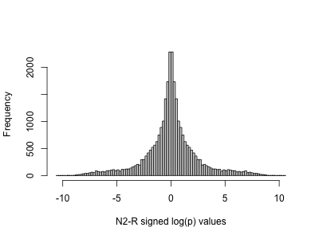
Show we can view N2/REM averages as well as their statistical comparisons together, we'll
merge the res table (N2 vs R effects) with PSI means (from a, above):
a <- merge( a , res , by=c("F","CH1","CH2") )
We'll show two equivalent ways (left and right columns) to plot the same results. In both cases, the challenge is to show directional group-level change in directed, pairwise metrics:
par(mfrow=c(2,2),mar=c(0,0,1,0))
zlim = range( a$NR[ a$F == 5 ] , a$R[ a$F == 5 ] )
arconn(a$CH1, a$CH2, z=a$NR, flt = a$F == 5, dst=0.18, zr=zlim, title="N2, mean PSI")
arconn(a$CH1, a$CH2, z=a$R , flt = a$F == 5, dst=0.18, zr=zlim, title="REM, mean PSI")
zlim2 = c(-11,11)
arconn(a$CH1, a$CH2, z=a$NR, z2=-a$Z, flt = a$F==5 & abs(a$Z)>5, dst=0.18, zr=zlim, z2r=zlim2, title="N2 -> R effects")
arconn(a$CH1, a$CH2, z=a$R , z2= a$Z, flt = a$ ==5 & abs(a$Z)>5, dst=0.18, zr=zlim, z2r=zlim2, title="R -> N2 effects")
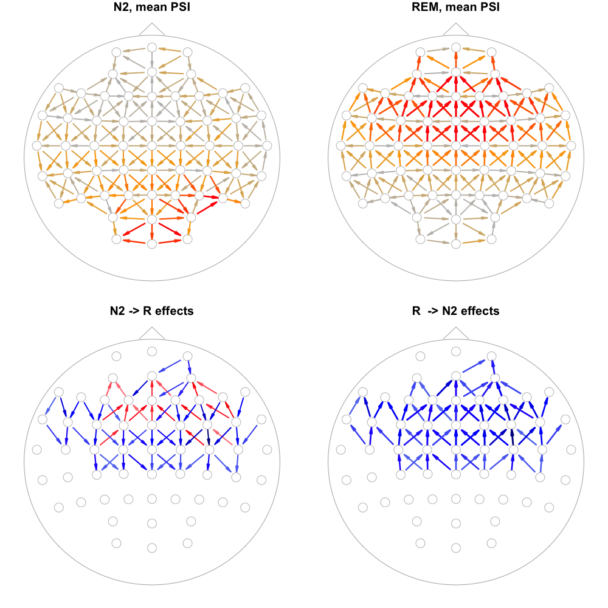
The top row of plots show the group mean PSI values, as plotted previously (N2 or REM). These are the "anchors" or "baselines" against which group-level changes are plotted in the lower row.
The lower row of plots use the z2 secondary metric, which reflects
(in this example) the N2-REM group difference in connectivity. Specifically,
-
these are filtered to show only the largest changes (
flt = abs( a$Z ) > 5), i.e. with p < 0.00001 -
unlike the standard
zprimary metrics, where we only ever plot the positive value/arrow-direction, these secondary metrics can be either positive or negative (i.e. reflecting a change up or down in terms of primary PSI) -
the thickness and direction of arrows still reflects the baseline mean -- except in this example, for filtering out arrows that didn't have large differences between groups, as noted above
-
however, the color of the arrows now reflects the secondary
z2metric, i.e. the change relative to the baseline.
As noted, both left and right plots show exactly the same information, just with different baselines. There is a mixture of both red and blue arrows in the left plot, because of the different comparison groups (N2 or REM), namely:
-
for the left plot, relative to N2, the arrows pointing up (nominal anterior flow in N2) grow stronger in REM, whereas the arrows pointing down (nominal posterior flow in N2) get weaker: i.e. the overall effect is of greater levels of posterior-to-anterior flow in REM
-
for the right plot, relative to REM (precisely because of the high posterior-to-anterior flow in REM) all arrows pointed up (i.e. top right average REM plot); consequently, the differences in N2 are all described as an attenuation (blue arrows) of this effect.
After looking at one or two of these plots, it isn't too hard to quickly extract the primary trends shown, at least at the pairwise/sensor level. Depending on the patterns of activation in the baseline, choosing one versus the other plot likely is be clearer.
In general, it should be better to select as the baseline the group with the higher connectivity values, as lots of values floating around zero will lead to arbitrary combinations of directions/colors that are essentially equivalent, i.e. whether we say (a,b) increases or (b,a) decreases it is the same effect.
Below we'll make these difference plots (the second row above) for all frequencies; we'll do this using both N2 (left column) and REM (right column) as the baseline:
zlim2 = c(-11,11)
par(mfrow=c(9,2),mar=c(0,0,1,0))
for (f in seq(3,19,2)) {
arconn(a$CH1, a$CH2, a$NR, z2 = -a$Z , flt = a$F==f & abs( a$Z ) > 4, dst=0.2,
cex=1,title=paste("REM vs N2,",f-2,"-",f+2,"Hz",sep=""),
lwd1=0.1, lwd2=1, z2r=zlim2, zr=zlim)
arconn(a$CH1, a$CH2, a$R, z2 = a$Z , flt = a$F==f & abs( a$Z ) > 4, dst=0.2,
cex=1,title=paste("N2 vs REM,",f-2,"-",f+2,"Hz",sep=""),
lwd1=0.1, lwd2=1, z2r=zlim2, zr=zlim)
}
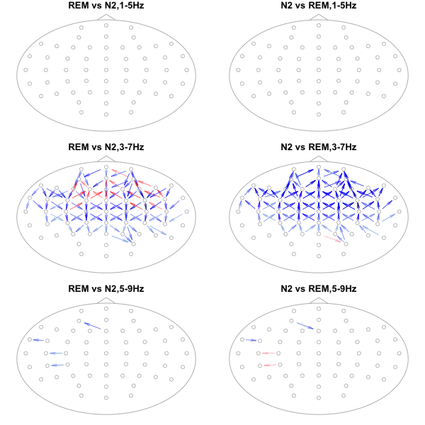
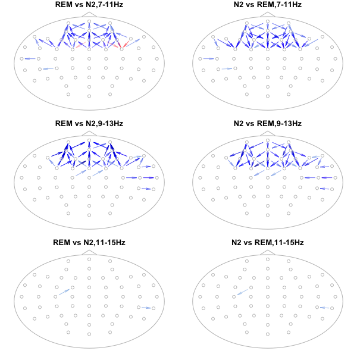
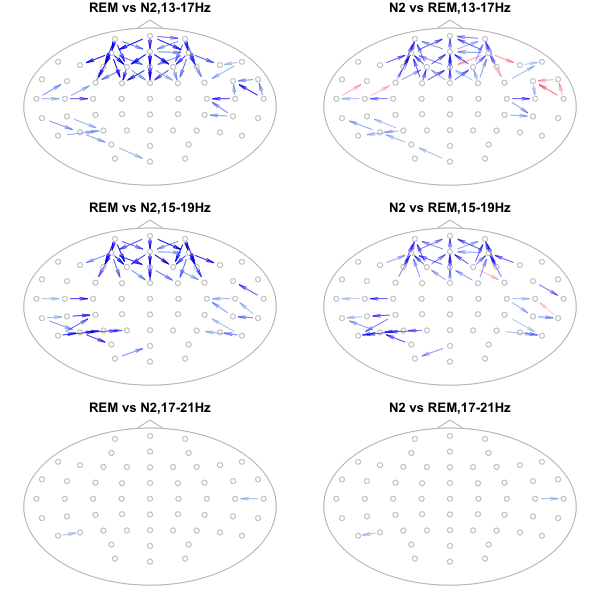
Note that most arrows are blue, indicating that most large effects here are qualitative differences -- i.e. a difference in not just the magnitude but the direction of effect, comparing N2 and REM (because the baseline always plots the positive orientation). If instead positive N2 connectivity tended to become even stronger (but still directionally consistent) in REM sleep (for example), then most links would be red.
The bottom line is that we see plenty of highly significant differences in PSI comparing N2 versus REM. To give a specific example, the most significant result is for PSI between C4 and FC4 channels for 5 Hz :
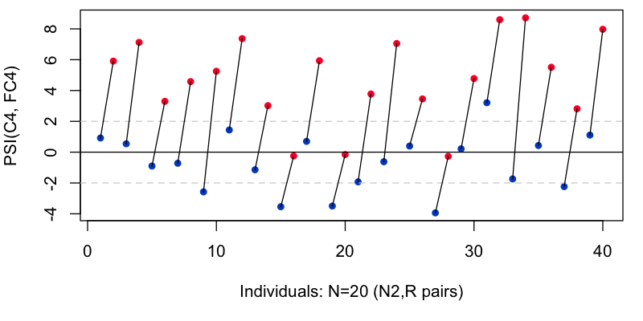
This plot connects the N2 PSI value (blue dot) with the corresponding REM PSI value (red dot) for each individual: the within-person effect is clearly very pronounced, with 20 of 20 individuals all showing the same directional effect (even though not every person has an absolute PSI value greater than 2). As PSI(C4,FC4) has positive values REM, this indicates flow from C4 to FC4, i.e. in the posterior-to-anterior direction as noted above. The t-test has a p < 10-10. Although this almost certainly capitalized on chance a little, we'll assess this effect later controlling for multiple testing. Also remember that all of these analyses were premised on selecting a random set of 50 epochs per individual: if you're re-running these, the specific details for top results will almost certainly be different, but the gestalt should persist.
Sex differences
Finally, we'll take a quick look at potential sex differences in
PSI-based connectivity. Later, we'll consider what is probably a more
efficient and powerful approach, implemented in Luna's GPA
command, to account for multiple testing. But, here we'll
just use some for-loops to wrap a series of t-tests.
First, we need to add an indicator of sex: we can use the ID in this particular case rather than having to merge in the phenotype file:
d$MALE <- grepl( "M" , d$ID )
Now we'll build the res table:
res <- numeric(0)
for (f in unique(d$F)) {
xx <- d[ d$F == f , ]
for (ch1 in unique(d$CH1))
for (ch2 in unique(d$CH2)) {
if ( ch1 != ch2 ) {
yy <- xx[ xx$CH1 == ch1 & xx$CH2 == ch2 , ]
tt1 <- t.test( NR ~ MALE , data = yy )
tt2 <- t.test( R ~ MALE , data = yy )
if ( tt1$p.value < 0.001 | tt2$p.value < 0.001 )
cat(f, ch1, ch2, tt1$estimate, tt1$p.value, tt2$estimate, tt2$p.value, "\n")
res <- rbind( res ,
c(f, ch1, ch2,
tt1$estimate, tt1$p.value,
tt2$estimate, tt2$p.value ))
}}
}
and tidy it up a little, also adding signed log-scaled p-values (the Z variables):
res <- data.frame( res )
names(res) <- c("F","CH1","CH2","NRF","NRM","NRP","RF","RM","RP" )
for (i in c(1,4:9)) res[,i] <- as.numeric( res[,i] )
res$NRZ <- sign( res$NRM - res$NRF ) * -log10( res$NRP )
res$RZ <- sign( res$RM - res$RF ) * -log10( res$RP )
This data frame has 28,728 rows (from dim(res)) and the following columns:
head(res)
F CH1 CH2 NRF NRM NRP RF RM RP NRZ RZ
3 AF3 AF4 -0.5513708 -0.7095479 0.8869467 -1.149473 -0.1533759 0.1760681 -0.05210247 0.75431920
3 AF3 AFZ -1.3978740 -1.5172748 0.8891889 -1.105327 -1.0569050 0.9431277 -0.05100597 0.02542950
3 AF3 C1 -0.3564186 -1.9150292 0.2275778 -2.123001 -3.2434248 0.4821097 -0.64287017 -0.31685413
3 AF3 C2 -0.4660081 -1.2549344 0.4629148 -1.780764 -3.2218645 0.3447841 -0.33449889 -0.46245277
3 AF3 C3 -0.8909695 -2.0186925 0.3690857 -2.575498 -1.9338371 0.6961678 -0.43287274 0.15728607
3 AF3 C4 -0.8815731 -1.4131906 0.6058248 -2.440798 -2.6395640 0.8915236 -0.21765296 -0.04986717
Columns starting NR or R are for N2 and REM sleep respectively; the second terms are:
Ffemale meanMmale mean-
Pt-test p-value -
Zsigned log10(p) -- a higherZimplies a higher PSI in males compared to females (although this may still reflect attenuated connectivity (i.e. -1 versus -2).
When dealing with a multiplicity of statistical hypothesis tests, it is often useful to look at the overall distribution of p-values, e.g. via a Q-Q plot, comparing two probability distributions based on their quantiles: in this case, the observed p-values versus the expectation under a global null (i.e. a uniform distribution of p-values between 0 and 1). In this context, upwards deviation from the diagonal reflects greater-than-expected test results:
n <- dim(res)[1]
j <- 1:n
x <- (j-0.5)/n
par(mfcol=c(1,2))
plot( -log10(x), -log10(sort(res$NRP)), ylim=range(0,7), xlim=range(0,7),
pch=20, cex=0.2, main="N2 Q-Q plot", ylab="", xlab="-log10(p) for M-F differences in PSI" )
lines(c(0,7),c(0,7),col="red")
plot( -log10(x), -log10(sort(res$RP)), ylim =range(0,7), xlim=range(0,7) ,
pch=20, cex=0.2, main="REM Q-Q plot", ylab="", xlab="-log10(p) for M-F differences in PSI" )
lines(c(0,7),c(0,7),col="red")
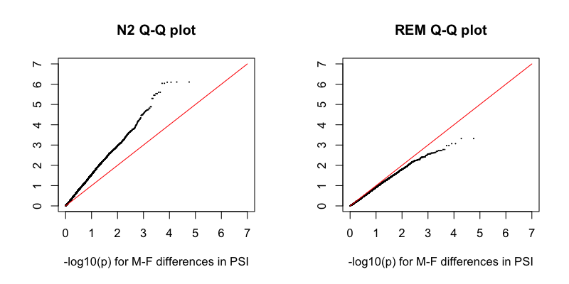
In broad terms, it appears as though the statistics from the N2 tests may contain some signal, whereas the REM tests don't. This type of plot shouldn't be interpreted too literally however, in particular as the tests are highly correlated (which is probably why the REM distribution trends below the diagonal, despite t-statistics generally showing good asymptotic behavior in small samples). As noted above, we'll adopt empirical approaches to assess significance in the context of multiple testing, in a section below.
The most highly significant N2 results are observed for frequency intervals around 11 and 13 Hz:
tapply( res$NRP < 0.0001 , res$F , sum )
3 5 7 9 11 13 15 17 19
0 0 0 0 14 38 0 2 0
In contrast, no single test meets the same p < 0.0001 threshold for REM sex differences:
tapply( res$RP < 0.0001 , res$F , sum )
3 5 7 9 11 13 15 17 19
0 0 0 0 0 0 0 0 0
Below, we'll make plots for the 11 and 13 Hz N2 tests, separately for
male and females PSI means. We'll also add plots that attempt to show the
differences between sexes, with the z2 approach as above.
zlim = range( res$NRM , res$NRF )
par(mfcol=c(1,3), mar=c(0,0,1,0))
arconn(res$CH1, res$CH2, z=res$NRM, flt= res$F == 11 & res$NRM > 2,
zr=zlim, title="M (11 Hz)" , dst=1, lwd1=0.2, lwd2=1)
arconn(res$CH1, res$CH2, z=res$NRF, flt= res$F == 11 & res$NRF > 2,
zr=zlim, title="F (11 Hz)" , dst=1, lwd1=0.2, lwd2=1)
arconn(res$CH1, res$CH2, z=res$NRF, z2=res$NRZ, flt= res$F == 11 & abs( res$NRZ ) > 2 ,
zr=zlim , title = "M vs F (Z)" , dst = 1 , lwd1=0.2, lwd2=1)
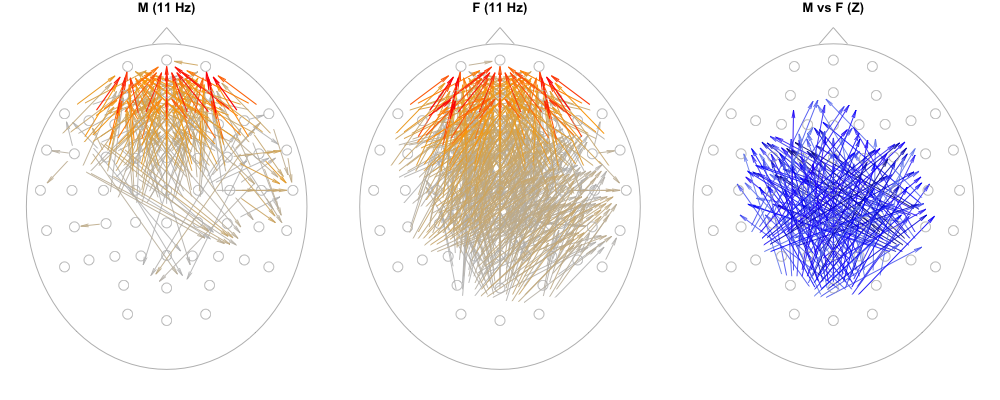
In contrast, the 13 Hz window shows a somewhat different pattern of sex-dependent effects:
arconn(res$CH1, res$CH2, z=res$NRM, flt= res$F==13 & res$NRM>2 ,
zr=zlim , title = "M (13 Hz)" , dst=1 , lwd1=0.2, lwd2=1)
arconn( res$CH1 , res$CH2 , z = res$NRF , flt= res$F==13 & res$NRF>2 ,
zr=zlim, title="F (13 Hz)", dst=1, lwd1=0.2, lwd2=1)
arconn( res$CH1, res$CH2, z=res$NRF, z2=res$NRZ, flt= res$F==13 & abs(res$NRZ)>2,
zr=zlim, title="M vs F (Z)", dst=1 , lwd1=0.2, lwd2=1)
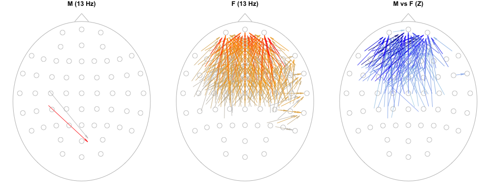
To illustrate one of the most significant sex differences, these are the raw data for PSI(F7,FPZ), which had a t-test p < 10-6. Consistent with the other plots above, females have consistently higher, positive PSI indicating greater flow from F7 to FPZ, an effect that is specific to sigma-range activity during N2 (but not REM) sleep:
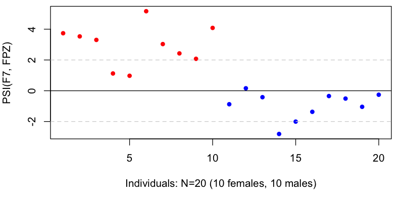
But will these particular results (based only on a very small sample) hold up to multiple testing, or replicate in other samples? We'll find out later in this walkthrough...
Summary
In this section we've seen:
-
how the phase slope index (PSI) can be applied to sensor-level hd-EEG data, to produce pairwise estimates of directed connectivity independent of volume conduction effects
-
per-channel estimates of net PSI
-
evidence for differences in connectivity patterns comparing N2 and REM sleep in the same individuals
-
evidence for sex differences, comparing the 10 females to the 10 females in this walkthrough dataset
-
ways of plotting these outputs, including approaches for representing group differences in pairwise, directed connectivity estimates
In the next section we'll consider dimension reduction techniques, that can be applied to these types of outputs as well as single-channel spectral power and other metrics.